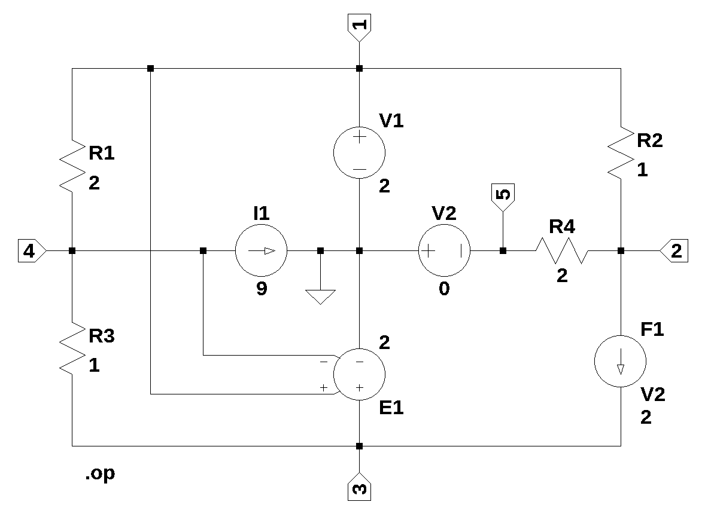

from sympy import *
import numpy as np
init_printing()4 test_1
Test circuit 1, shown below, contains resistors, independent and dependent current and voltage sources. This circuit is from [1], page 69, figure 4.8. The circuit was drawn in LTSpice [2] and the circuit nodes are labeled. For no particular reason, the reference note was chosen to be the center node of the circuit and is connected to the ground symbol.

The net list for the circuit was generated by LTSpice and show below:
* test_1.asc
R2 1 2 1
R3 4 3 1
R4 2 5 2
V1 1 0 2
I1 4 0 9
V2 0 5 0
E1 3 0 1 4 2
F1 2 3 V2 2
R1 1 4 2
.op
.backanno
.endThis netlist is read into the Symbolic Modified Nodal Analysis [3] Jupyter notebook and the following circuit equations were generated.
⎛1 1 ⎞ v₂ v₄
I_V1 + v₁⋅⎜── + ──⎟ - ── - ── = 0 (1)
⎝R₂ R₁⎠ R₂ R₁
⎛1 1 ⎞ v₅ v₁
I_F1 + v₂⋅⎜── + ──⎟ - ── - ── = 0 (2)
⎝R₄ R₂⎠ R₄ R₂
v₃ v₄
I_Ea1 - I_F1 + ── - ── = 0 (3)
R₃ R₃
⎛1 1 ⎞ v₃ v₁
v₄⋅⎜── + ──⎟ - ── - ── = -I₁ (4)
⎝R₃ R₁⎠ R₃ R₁
v₂ v₅
-I_V2 - ── + ── = 0 (5)
R₄ R₄
v₁ = V₁ (6)
-v₅ = V₂ (7)
-ea₁⋅v₁ + ea₁⋅v₄ + v₃ = 0 (8)
I_F1 - I_V2⋅f₁ = 0 (9)The equations represent the currents flowing into the nodes and voltage across V2 and the voltage at node 3. The notebook also generates text strings for SymPy [3] variable, matrices and component values, which are used below.
References:
1. D. E. Johnson, J. L. Hilburn, and J. R. Johnson, Basic Electric Circuit Analysis, Prentice-Hall, Inc. 1978 2. LTSpice 3. Symbolic Modified Nodal Analysis Jupyter notebook 4. Sympy
Copy the text strings generated by the Symbolic Modified Nodal Analysis [3] Jupyter notebook to the cell below.
I_V1, R2, V2, I1, I_F1, v1, I_Ea1, v2, I_V2, ea1, v5, v3, R3, f1, R4, V1, v4, R1 = symbols(' I_V1 R2 V2 I1 I_F1 v1 I_Ea1 v2 I_V2 ea1 v5 v3 R3 f1 R4 V1 v4 R1 ')
A = Matrix([[1/R2 + 1/R1, -1/R2, 0, -1/R1, 0, 1, 0, 0, 0], [-1/R2, 1/R4 + 1/R2, 0, 0, -1/R4, 0, 0, 0, 1], [0, 0, 1/R3, -1/R3, 0, 0, 0, 1, -1],
[-1/R1, 0, -1/R3, 1/R3 + 1/R1, 0, 0, 0, 0, 0], [0, -1/R4, 0, 0, 1/R4, 0, -1, 0, 0], [1, 0, 0, 0, 0, 0, 0, 0, 0], [0, 0, 0, 0, -1, 0, 0, 0, 0],
[-ea1, 0, 1, ea1, 0, 0, 0, 0, 0], [0, 0, 0, 0, 0, 0, -f1, 0, 1]])
X = Matrix( [v1, v2, v3, v4, v5, I_V1, I_V2, I_Ea1, I_F1] )
Z = Matrix( [0, 0, 0, -I1, 0, V1, V2, 0, 0] )Put the matrices in equation form and replace the component reference designators with element values.
equ = Eq(A*X,Z)4.1 Symbolic solution
symbolic_solution = solve(equ,X)
symbolic_solution\(\displaystyle \left\{ I_{Ea1} : \frac{- I_{1} R_{1} R_{2} ea_{1} f_{1} + I_{1} R_{1} R_{2} ea_{1} - I_{1} R_{1} R_{2} f_{1} + I_{1} R_{1} R_{2} + I_{1} R_{1} R_{4} ea_{1} + I_{1} R_{1} R_{4} + R_{1} V_{1} ea_{1} f_{1} + R_{1} V_{1} f_{1} + R_{1} V_{2} ea_{1} f_{1} + R_{1} V_{2} f_{1} + R_{2} V_{1} f_{1} - R_{2} V_{1} + R_{3} V_{1} f_{1} + R_{3} V_{2} f_{1} - R_{4} V_{1}}{R_{1} R_{2} ea_{1} f_{1} - R_{1} R_{2} ea_{1} + R_{1} R_{2} f_{1} - R_{1} R_{2} - R_{1} R_{4} ea_{1} - R_{1} R_{4} + R_{2} R_{3} f_{1} - R_{2} R_{3} - R_{3} R_{4}}, \ I_{F1} : \frac{V_{1} f_{1} + V_{2} f_{1}}{R_{2} f_{1} - R_{2} - R_{4}}, \ I_{V1} : \frac{- I_{1} R_{2} R_{3} f_{1} + I_{1} R_{2} R_{3} + I_{1} R_{3} R_{4} - R_{1} V_{1} ea_{1} f_{1} + R_{1} V_{1} ea_{1} - R_{1} V_{1} f_{1} + R_{1} V_{1} - R_{1} V_{2} ea_{1} f_{1} + R_{1} V_{2} ea_{1} - R_{1} V_{2} f_{1} + R_{1} V_{2} - R_{2} V_{1} f_{1} + R_{2} V_{1} - R_{3} V_{1} f_{1} + R_{3} V_{1} - R_{3} V_{2} f_{1} + R_{3} V_{2} + R_{4} V_{1}}{R_{1} R_{2} ea_{1} f_{1} - R_{1} R_{2} ea_{1} + R_{1} R_{2} f_{1} - R_{1} R_{2} - R_{1} R_{4} ea_{1} - R_{1} R_{4} + R_{2} R_{3} f_{1} - R_{2} R_{3} - R_{3} R_{4}}, \ I_{V2} : \frac{V_{1} + V_{2}}{R_{2} f_{1} - R_{2} - R_{4}}, \ v_{1} : V_{1}, \ v_{2} : \frac{- R_{2} V_{2} f_{1} + R_{2} V_{2} - R_{4} V_{1}}{R_{2} f_{1} - R_{2} - R_{4}}, \ v_{3} : \frac{I_{1} R_{1} R_{3} ea_{1} + R_{1} V_{1} ea_{1}}{R_{1} ea_{1} + R_{1} + R_{3}}, \ v_{4} : \frac{- I_{1} R_{1} R_{3} + R_{1} V_{1} ea_{1} + R_{3} V_{1}}{R_{1} ea_{1} + R_{1} + R_{3}}, \ v_{5} : - V_{2}\right\}\)
left_side = list(symbolic_solution.keys())
right_side = list(symbolic_solution.values())
for i in range(len(symbolic_solution)):
pprint(Eq(left_side[i],right_side[i]))v₁ = V₁
-R₂⋅V₂⋅f₁ + R₂⋅V₂ - R₄⋅V₁
v₂ = ─────────────────────────
R₂⋅f₁ - R₂ - R₄
I₁⋅R₁⋅R₃⋅ea₁ + R₁⋅V₁⋅ea₁
v₃ = ────────────────────────
R₁⋅ea₁ + R₁ + R₃
-I₁⋅R₁⋅R₃ + R₁⋅V₁⋅ea₁ + R₃⋅V₁
v₄ = ─────────────────────────────
R₁⋅ea₁ + R₁ + R₃
v₅ = -V₂
-I₁⋅R₂⋅R₃⋅f₁ + I₁⋅R₂⋅R₃ + I₁⋅R₃⋅R₄ - R₁⋅V₁⋅ea₁⋅f₁ + R₁⋅V₁⋅ea₁ - R₁⋅V₁⋅f
I_V1 = ───────────────────────────────────────────────────────────────────────
R₁⋅R₂⋅ea₁⋅f₁ - R₁⋅R₂
₁ + R₁⋅V₁ - R₁⋅V₂⋅ea₁⋅f₁ + R₁⋅V₂⋅ea₁ - R₁⋅V₂⋅f₁ + R₁⋅V₂ - R₂⋅V₁⋅f₁ + R₂⋅V₁ - R
──────────────────────────────────────────────────────────────────────────────
⋅ea₁ + R₁⋅R₂⋅f₁ - R₁⋅R₂ - R₁⋅R₄⋅ea₁ - R₁⋅R₄ + R₂⋅R₃⋅f₁ - R₂⋅R₃ - R₃⋅R₄
₃⋅V₁⋅f₁ + R₃⋅V₁ - R₃⋅V₂⋅f₁ + R₃⋅V₂ + R₄⋅V₁
──────────────────────────────────────────
V₁ + V₂
I_V2 = ───────────────
R₂⋅f₁ - R₂ - R₄
-I₁⋅R₁⋅R₂⋅ea₁⋅f₁ + I₁⋅R₁⋅R₂⋅ea₁ - I₁⋅R₁⋅R₂⋅f₁ + I₁⋅R₁⋅R₂ + I₁⋅R₁⋅R₄⋅ea
I_Ea1 = ──────────────────────────────────────────────────────────────────────
R₁⋅R₂⋅ea₁⋅f₁ - R₁⋅R₂⋅ea
₁ + I₁⋅R₁⋅R₄ + R₁⋅V₁⋅ea₁⋅f₁ + R₁⋅V₁⋅f₁ + R₁⋅V₂⋅ea₁⋅f₁ + R₁⋅V₂⋅f₁ + R₂⋅V₁⋅f₁ -
──────────────────────────────────────────────────────────────────────────────
₁ + R₁⋅R₂⋅f₁ - R₁⋅R₂ - R₁⋅R₄⋅ea₁ - R₁⋅R₄ + R₂⋅R₃⋅f₁ - R₂⋅R₃ - R₃⋅R₄
R₂⋅V₁ + R₃⋅V₁⋅f₁ + R₃⋅V₂⋅f₁ - R₄⋅V₁
───────────────────────────────────
V₁⋅f₁ + V₂⋅f₁
I_F1 = ───────────────
R₂⋅f₁ - R₂ - R₄4.2 Numeric solution
Substitue the element values into the equations and solve for unknown node voltages and currents.
# enter the element values
element_values = {R1:2,R2:1,R3:1,R4:2,V1:2,V2:0,I1:9,f1:2,ea1:2}
equ1a = equ.subs(element_values)
equ1a # display the equations\(\displaystyle \left[\begin{matrix}I_{V1} + \frac{3 v_{1}}{2} - v_{2} - \frac{v_{4}}{2}\\I_{F1} - v_{1} + \frac{3 v_{2}}{2} - \frac{v_{5}}{2}\\I_{Ea1} - I_{F1} + v_{3} - v_{4}\\- \frac{v_{1}}{2} - v_{3} + \frac{3 v_{4}}{2}\\- I_{V2} - \frac{v_{2}}{2} + \frac{v_{5}}{2}\\v_{1}\\- v_{5}\\- 2 v_{1} + v_{3} + 2 v_{4}\\I_{F1} - 2 I_{V2}\end{matrix}\right] = \left[\begin{matrix}0\\0\\0\\-9\\0\\2\\0\\0\\0\end{matrix}\right]\)
Solve the equations for voltages and currents.
ans = solve(equ1a,X)
ans\(\displaystyle \left\{ I_{Ea1} : - \frac{80}{7}, \ I_{F1} : -4, \ I_{V1} : \frac{3}{7}, \ I_{V2} : -2, \ v_{1} : 2, \ v_{2} : 4, \ v_{3} : \frac{44}{7}, \ v_{4} : - \frac{8}{7}, \ v_{5} : 0\right\}\)
for name, value in ans.items():
print('{:s}: {:f}'.format(str(name),float(value)))
#print(name,value)v1: 2.000000
v2: 4.000000
v3: 6.285714
v4: -1.142857
v5: 0.000000
I_V1: 0.428571
I_V2: -2.000000
I_Ea1: -11.428571
I_F1: -4.000000The node voltages and current through the sources are solved for. The Sympy generated solution matches the LTSpice results:
--- Operating Point ---
V(1): 2 voltage
V(2): 4 voltage
V(4): -1.14286 voltage
V(3): 6.28571 voltage
V(5): 0 voltage
I(F1): -4 device_current
I(I1): 9 device_current
I(R2): -2 device_current
I(R3): -7.42857 device_current
I(R4): 2 device_current
I(R1): 1.57143 device_current
I(E1): -11.4286 device_current
I(V1): 0.428571 device_current
I(V2): -2 device_currentThe results from LTSpice agree with the SymPy results.
Currents through the resistors must be calculated by hand. For example:
print('I(R1): {:f}'.format(float((ans[v1]-ans[v4])/element_values[R1])))I(R1): 1.571429